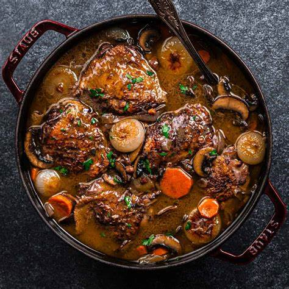

Chicken Katsu Curry Recipe
What is Chicken Katsu Curry?
Chicken Katsu Curry is a popular Japanese dish that consists of Japanese curry with a breaded chicken cutlet on top.
The curry is usually made with a store-bought block of Japanese curry roux, which is commonly used in Japanese
households.
The dish is typically served with rice and garnished with fukujinzuke (a type of pickled vegetable).
Ingredients
2 lbs boneless chicken breasts
1 cup Good Life Breadcrumbs
¾ cup buttermilk
3 ounces curry sauce mix
1 potato cubed
1 carrot cubed
1 onion wedged
2 ¼ cups water
½ teaspoon salt
½ teaspoon ground black pepper
1 cup cooking oil
Instructions / How to Cook
1. Rub salt and ground black pepper all over the chicken. Arrange it on a wide bowl and pour the buttermilk. Make sure to coat the entire chicken. Cover the bowl and refrigerate for at least 3 hours.
2. Meanwhile, make the curry sauce by heating 3 tablespoons of cooking oil in a cooking pot. Sauté the onion until it separates into layers. Add carrot and potato. Continue cooking for 1 minute.
3. Pour water in the cooking pot. Cover and let it boil. Reduce the heat to medium and continue boiling for 10 minutes.
4. Add the curry sauce mix. Stir until well blended. Turn the heat off and set the sauce aside while keeping it warm.
5. Start preparing to fry the chicken by heating the oil to 350F in a deep cooking pot.
6. Separate the chicken breast from the buttermilk letting excess liquid drip. Dredge the chicken breasts in the Good Life Panko Breadcrumbs until all the sides are completely coated.
7. Deep fry the chicken for 10 to 12 minutes. Remove from the pot and let the excess oil drip.
8.Arrange on a plate with curry sauce. Serve with warm rice.